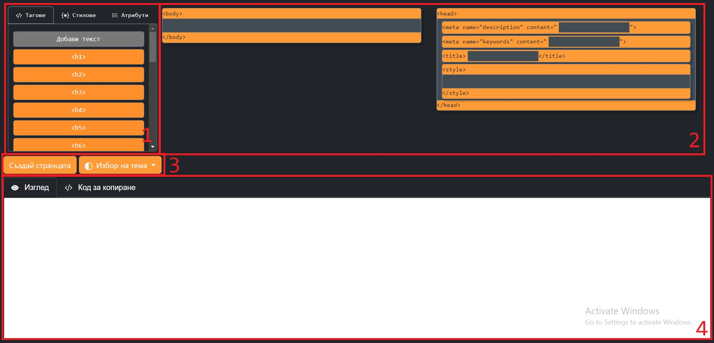
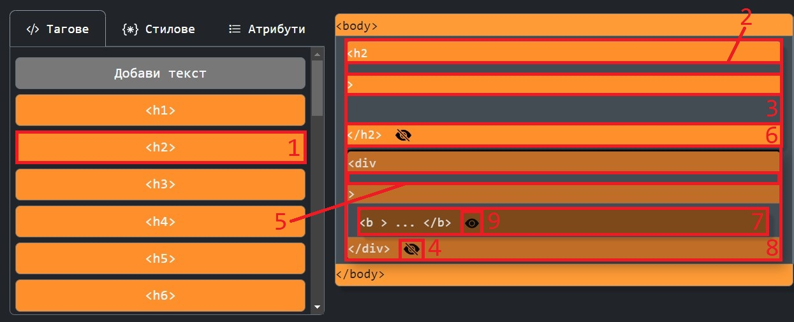
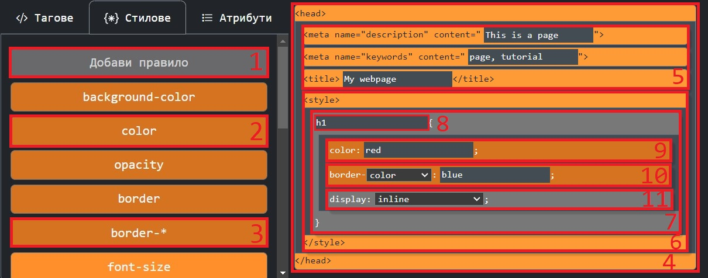
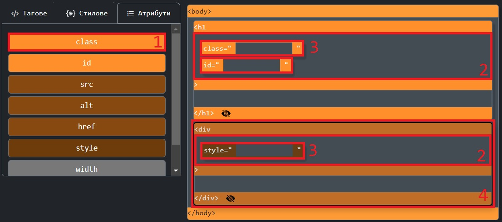

Конструирай статична уебстраница!
Използвайте Drag & Drop базирания инструмент за да се запознаете с HTML таговете и CSS стиловете по лесен и разбираем начин. Препоръчително е първо да прочетете инструкциите за работа.
Инструкции за работа
Внимание
Интерактивеният инструмент е предвиден за ползване на Desktop устройства. Ако се използва на mobile или touch screen базрано устройство, той няма да е удобен за ползване, поради липсата на Drag & Drop поддръжка при touch sreen. Все още част от функционалносттите ще са налице, но препоръчваме да преминете на Desktop устойство, ако не сте, преди да стартирате инструмента.
Внимание
Когато се опитате да преместите елемент с много поделементи може да стане много бавно. Препоръчваме да затворите елемента с бутона за скриване (Тагове-(4)) преди да го местите, за да предотвратите забавяне или забиване.
Начало
Интерактивният Drag & Drop инстримент е чудесен за рабиране на HTML и CSS ба концептуално ниво без
нуждата от писане на код. Прочетете инструкциите за да разберете как се използва инструмента и да
предотвратите понататъчни обърквания.
След като натиснете [Към Инструмента] ще видите този екран (може да е и в светла тема; зависи каква Ви е
сегашната тема). В дясно е полето с инструменти (1) с три секции: Тагове, Стилове и Атрибути; До него се
намират двете основни полета за работа - таговете head и body (2), където можете да добавяте и нареждате
елементи. По надолу са бутоните (3) [Създай страницата] - В полето за излгед показва страницата
направена
чрез блоковете за HTML и CSS и [Избери Тема] - Дава възможност за избор на тема, както в останалата част
от сайта. Под тях се намира полето за изглед и копиране на код (4). Оттам можете да прегледате постоянно
какво сте създали и да копирате кода и поставите в отделен файл.

Тагове
Тагове се добавят от полето "Тагове". За да добавите таг, натиснете бутона с избрания таг (1). Това ще добави блок с този таг (6) в <body> секцията или като поделемент на избран таг (8). Всеки таг има една или две тъмни (или бели) зони - място за атрибути (2, 5) и за подчинени елементи (3). За да преместите елемент в друг, натиснете поделемента и го плъзнете с мишката до полето за поделементи на родителския елемент. За да избререте елемент, щракнете върху него. Той ще стане по-блед и границата му ще се удебели (8). За да премахнете избора, щракнете върху празно пространство или натиснете [Esc] бутона на клавиатурата. Понякога няма да можете да плъзнете някой таг в друг или пък да добавите таг когато има избран. Това става, защото инсруменът е настроен да позволява само определени елементи да са подделементи на даден елемент. Тези правила са спрямо конвенциите на езика HTML и Ви насочват да използвате само семантино верни конструкции. Елементите могат да скриват съсържанието си за по-компактнен изглед и лесна работа. Скрит елемент (7) има три точки (...) вместо атрибутите и поделементи. Елемент се скрива с бутона за скриване (4) и показва с бутона за показване (9). Бутонът [Добави текст] добавя по-различен елемент с поле за въвеждане на текст. Така можете да добавите съсржание към вашата статична уебстаница. 
Стилове и <head> таг
В <head>(4) тага има три тага(5) освен <style>(6). Това са: <meta> за description, <meta> за keywords, <title>. И трите имат малко текстово поле за съдържание. Стилове и правила се добавят от полето "Стилове". За да добавите стил първо трябва да имате правило(7). За да добаитв правило натиснете бутона [Добави Правило](1). Това ще добави в <style> тага(6) блок с поле за CSS селектор(8) и стилове. Ако вече има правило при натискане на бутон за стил(2,3) ще се добави блок за стил(9,10,11) в избрания блок за правило. Ако няма избран, ще се добави в първия. Блоковете за стил могат да имат няколко вида. Пъврият вид(9) имат едно поле за въвеждане на стойност. Вторият вид(10) имат поле за избор на спецификация на стил. Отбелязани са с съответния стил с '-*' след това (3) (пр. border-* означава border-radius, border-style, и пр.). Третият вид(11) имат поле за избор като стойност (пр. diplay: block/inline/inline-block/none). 
Атрибути
Атрибутите се добавят на HTML тагове от менюто "Атрибути". За да добавите атрибут първо трябва да добавите (ако няма) и да изберете HTML таг (4). След това наиснете бутон за атрибут (1). Това ще добави блок за атрибут (3) в полето за атрибути (2) на избрания таг. Понякога няма да можете да плъзнете някой атрибут в таг или пък да добавите атрибут. Това става, защото инсруменът е настроен да позволява само определени атрибути на даден елемент. Тези правила са спрямо конвенциите на езика HTML и Ви насочват да използвате само семантино верни конструкции. 